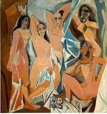

126. Les Demoiselles d’Avignon. Pablo Picasso. 1907 CE Oil on canvas.
- Form
- The three on the left are more conservatively painted; the two on right more radical; reflects a dichotomy in Picasso
- Multiple views are expressed at the same time
- Depth is limited, but ambiguous and ever-shifting
- The painting has semi-transparent passages
-
- Content
- Depicts five prostitutes in a bordello in Avignon Street in Barcelona, each posing for a customer
- Poses are not traditionally alluring but awkward, expressionless, and uninviting
- Context
- This is the first cubist work, influenced by late Cezanne and perhaps African masks and ancient Iberian sculpture
- Influenced by Gauguin’s so-called Primitivism